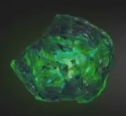

| Name |
Color |
Inf |
Img |
| Камень пространства |
Синий |
Тессеракт назван так из-за своей кубической формы. Он способен предоставить доступ к любой точке во вселенной, если его использовать правильно. |
 |
| Камень разума |
Жёлтый |
Скипетр был оружием, которое использовало жёлтый камень разума, хранящийся в синем компьютерном модуле, который также скрывал присутствие камня. |
 |
| Камень реальности |
Красный |
В отличии от всех, ранее встреченных камней бесконечности, у которых содержащие ячейки - твёрдые, эфир выглядит как тёмная, красная и вязкая жидкость. |
 |
| Камень силы |
Пурпурный |
Сфера - это защитный корпус пурпурного камня бесконечности. Камень является источником невероятной силы, который, при использовании всего потенциала, содержит достаточно мощи, чтобы уничтожить целую планету. |
|
| Камень времени |
Зелёный |
Глаз Агамотто - древний артефакт, подвеска, созданная Агамотто, первым верховным чародеем, предположительно для содержания и управления силой камня времени, находящегося внутри. |
 |
| Камень души |
Оранжевый |
Мало что известно о Камне души. Однако, согласно древним текстам Вонга, камень души может оказаться самой большой угрозой из всех камней бесконечности.[23] Гамора знала о местонахождении камня души, но скрывала это от Таноса. |
 |